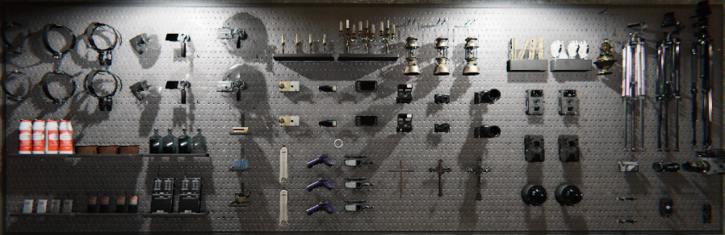

|  |
m |
l |
k |
j |
i |
h |
g |
f |
e |
d |
c |
b |
a |
UV Light
Reveals Fingerprints and Footprints. Important for evidence |
Video Camera
Used to detect Ghost Orbs and record activity. Can be placed on a tripod. Has night vision. |
Ghost Writing Book
Leave it on the floor or a surface. If the ghost writes in it, it’s Ghost Writing evidence. |
Spirit Box
Lets you talk to the ghost and get vocal responses. A response counts as Spirit Box evidence. |
Thermometer
Measures room temperature. Very cold temperatures can indicate the ghost’s room. |
EMF Reader
Detects electromagnetic activity from ghost interactions. EMF Level 5 can be evidence for some ghosts |
DOTS Projector
Projects green laser dots.Some ghosts appear as a fast silhouette moving through the dots |
|